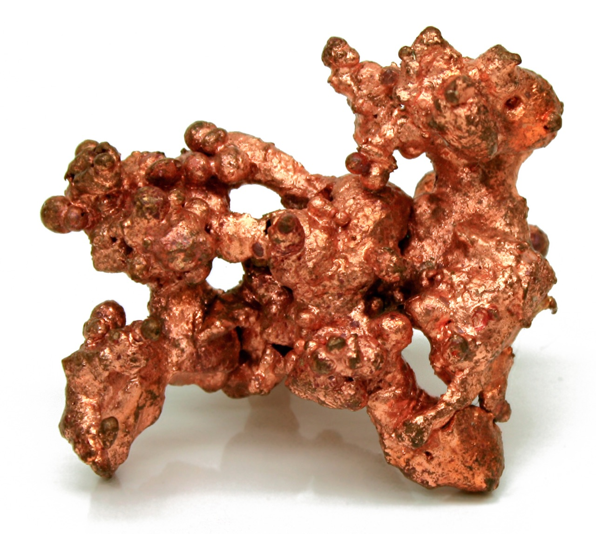
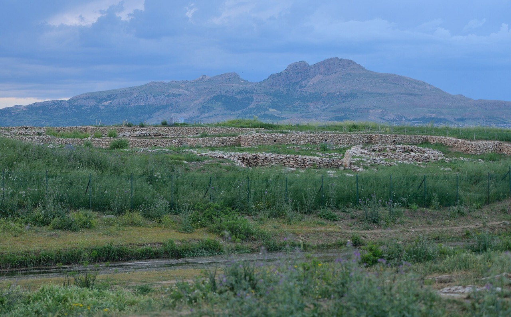

Шаг 1 · Что заметили
Вместо скола вмятина
В каменном веке важно было уметь ударить по камню, который называют кремнем, так, чтобы отколоть острую пластину. Делать так орудия было обычным, широко распространённым умением. Поэтому, найдя незнакомый камень, человек привычно пробовал по нему ударить.
Иногда в русле реки или в скале находили тяжёлый красноватый кусок с зелёной коркой. Это была самородная медь: чистый металл, который встречается в природе уже готовым. Представь: человек бьёт по куску и ждёт, что отколется пластина. Но ничего не откалывается. Остаётся вмятина.

Кусок самородной меди около 4 см в поперечнике, снятый крупным планом. Здесь видна чистая блестящая поверхность без зелёной корки, о которой говорилось выше.
Фото: Jonathan Zander, CC BY-SA 3.0, Wikimedia Commons

Для него это был словно камень с новым свойством. Ударами ему можно придать форму, и он её сохранит. Ни один из знакомых тем людям камней так себя не вёл.
Почему медь можно найти уже в виде металла. Почти все металлы в земле соединены с другими веществами. На вид это обычная горная порода. Немного металла есть почти в любом камне. Но рудой породу называют лишь тогда, когда металла в ней достаточно, чтобы его добыча стоила труда. Медь, золото и серебро неохотно образуют такие соединения. Поэтому изредка они встречаются чистыми. Химическое обозначение меди, Cu, происходит от латинского слова cuprum: «металл с Кипра».
Шаг 2 · Чему научились
Холодная ковка
Из открытия выросло ремесло. Положи медь на плоский камень и бей по ней другим камнем. Расплющи в лист. Сверни лист в маленькую трубочку, и получится бусина. Или выкуй шило, острый инструмент для прокалывания отверстий, крючок либо булавку. Огонь здесь не нужен. Когда металлу придают форму ударами без нагрева, это называют холодной ковкой.
Самое известное раннее собрание таких вещей нашли в поселении Чайоню-Тепеси, на юго-востоке нынешней Турции. В нём около 113 бусин, крючков, шил и булавок из самородной меди. Их датируют 8200–7500 годами до н. э. Некоторые находки могут быть старше: медные бусины из Ашиклы-Хёюка, возможно, относятся к 8500 году до н. э. или более раннему времени, а подвеску из северного Ирака датируют примерно 8700 годом до н. э.

Раскопанные каменные основания построек в Чайоню на юго-востоке Турции, снимок 2017 года. Это поселение, о котором говорится выше, но фотография не указывает, какая его часть и какой период показаны.
Фото: Dûrzan Cîrano, CC BY-SA 4.0, Wikimedia Commons

Люди у Великих озёр в Северной Америке пришли к тому же независимо. Остатки дерева и шнуров на их медных вещах имеют возраст от 8500 до 3580 лет. Медь ковали и применяли отжиг: нагрев, который возвращает ей мягкость. Археологи всё ещё спорят, плавили ли её также и применяли ли литьё, придавая форму расплавленному металлу.
С порядком событий не всё ясно. В привычном рассказе сначала идёт холодная ковка, а потом нагрев. Но вещи из Чайоню уже хранят следы нагрева между проковками. Пока находки не показывают отдельного периода, когда медь ковали только холодной. Возможно, он был коротким. Возможно, вещи той поры просто ещё не нашли. Мы изучаем холодную ковку отдельно, потому что это отдельный физический процесс. Это не утверждение о том, что было раньше.
Работа с медью дала два урока. Чем дольше куёшь кусок, тем он твёрже. Это полезно: шило из прокованной меди острее и не гнётся. Но каждый удар приближает появление трещин по краям. Тогда работу придётся выбросить.
Шаг 3 · Как это объясняли тогда
Письменных объяснений не осталось
До появления письма было ещё почти пять тысяч лет. Первые таблички из Урука датируют 3350–3200 годами до н. э. Поэтому объяснений первых мастеров у нас нет. Мы не знаем, чем они считали медь. Возможно, особым видом камня. Это правдоподобная догадка, но не факт.
О работе мастеров рассказывают сами вещи. Разрежь древнюю бусину и посмотри на срез под микроскопом. По рисунку металла видно, ковали ли его и нагревали ли потом. К микроскопу мы вернёмся в девятой главе. А сейчас заглянем глубже, чем он позволяет.
Шаг 4 · Взгляд внутрь
Что удар меняет внутри металла
Знакомься: атом
Любое вещество состоит из атомов. Пока представляй их очень маленькими шариками. В меди и других металлах они лежат не как попало. Они выстроены ровными рядами, как апельсины на прилавке. Такое правильное расположение называют кристаллом. Не у каждого твёрдого вещества оно есть. Например, в стекле рисунок расположения атомов не повторяется на больших расстояниях.
В меди соседние атомы находятся на расстоянии 0,256 нанометра друг от друга. Нанометр равен миллионной доле миллиметра. В ряд длиной один миллиметр помещается около четырёх миллионов атомов меди. Шарики на рисунках ниже увеличены в десятки миллионов раз.
Почему камень колется, а медь мнётся
Всё дело в том, что удерживает эти крошечные шарики вместе.
Кремень состоит из кварца, вещества, в котором соединены кремний и кислород: SiO2. Каждый атом удерживают рядом с определёнными соседями жёсткие связи. Представь маленькие стержни между атомами. Сдвинь один слой относительно другого, и стержни разорвутся. Заново они не соединятся. Появилась трещина.
В металле атомы не привязаны к определённым соседям. Их держит общий «клей», распределённый между всеми сразу. В шестой главе мы познакомимся с электронами, которые и служат этим клеем. Сдвинь слой на один шаг. У каждого атома теперь новый сосед, но клей остался. Такой способ удерживать атомы вместе называют металлической связью.
Попробуй отпустить ползунок до середины. Слой меди вернётся назад. Возвращение к прежней форме называют упругостью. Именно поэтому медная пластина пружинит. Отпусти ползунок после середины, и слой перескочит на шаг вперёд и останется там. Это и есть вмятина. В настоящей меди сдвиг, после которого слой ещё может вернуться, гораздо меньше половины шага. В следующем разделе разберём почему.
Слой сдвигается понемногу
Чтобы сдвинуть весь слой атомов разом, нужна огромная сила. Для меди расчёт даёт несколько гигапаскалей, единиц, которыми измеряют силу на площадь. Но настоящий чистый металл начинает течь при нагрузке примерно в тысячу раз меньше. Значит, что-то облегчает движение.
Попробуй сдвинуть большой ковёр по полу, потянув за край. Тяжело. Теперь сделай складку и протолкни её от одного края до другого. Ковёр почти без усилия переместится на ширину складки. В кристалле происходит похожее. По нему движется маленькая «складка»: место с лишним рядом атомов. В каждый момент разрывается и заново соединяется лишь одна линия связей.
Научное название такой складки: дислокация. Именно она делает металл мягким.
Теперь проследи тот же процесс по шагам, с линиями между атомами. Каждая линия соединяет два атома напротив друг друга по обе стороны плоскости сдвига, поверхности, вдоль которой скользят слои. Чем сильнее растянута линия, тем она краснее. В обоих окнах верхний слой в конце сдвинется на один атом. Следи, сколько линий натянуто одновременно.
Почему ковка делает медь твёрже
Каждый удар создаёт новые складки. Пока их мало, они свободно проходят через металл, и кусок легко меняет форму. Но складки мешают друг другу. Две встречаются на соседних рядах и сцепляются. В них упирается третья. В третью упирается четвёртая.
Когда складки застряли, металлу труднее придать форму: свободно двигаться уже нечему. Через молот чувствуется, что кусок стал твёрже. Такое упрочнение ударами называют наклёпом. Наклёпанная медь примерно вдвое твёрже мягкой. Топор из самородной меди с Великих озёр оставили таким, каким он получился после холодной ковки. Его твёрдость составляет 116 единиц по шкале Виккерса, шкале для измерения твёрдости. У наконечника копья, который после ковки нагрели на огне, она равна 59. Когда складкам почти некуда двигаться, металл уже не может уступить удару, изменив форму. В самых забитых местах накапливается нагрузка, и там раскрываются трещины.
Здесь действует точное правило: прочность растёт как квадратный корень из плотности складок, то есть из того, насколько тесно они расположены. Проще говоря, чтобы удвоить прибавку прочности, складок должно стать вчетверо больше.
Кусок металла состоит из зёрен
Кусок металла почти никогда не бывает одним кристаллом. В нём множество маленьких кристаллов, плотно сросшихся друг с другом. В каждом ряды атомов направлены по-своему. Такой кристаллик называют зерном. Место, где встречаются два зерна, называют границей зёрен.
Откуда берутся складки и почему движутся в обе стороны
Молот не толкает складку так, как твоя рука толкает складку ковра. Удар сжимает весь кусок. Во всей его толще возникает усилие, которое стремится сдвинуть слои атомов друг относительно друга. Сильнее всего этот эффект на плоскостях, расположенных под углом к удару.
У складок есть два вида, которые называют противоположными знаками. У одной лишний полуряд сверху, у другой снизу. Одна и та же сила гонит складки разных знаков в разные стороны. Поэтому в линзе они идут и влево, и вправо, хотя молот бьёт с одной стороны.
Когда металл только начинает менять форму, складки возникают главным образом на неровностях границ зёрен. Они появляются и на поверхности куска. Но для металла из множества зёрен это мало что меняет: большинство зёрен не касается поверхности. Внутри зерна есть источники, которые под нагрузкой выпускают складку в виде замкнутой петли. Петля расширяется во все стороны. Наш рисунок показывает плоский срез. Петля пересекает его в двух местах, поэтому выглядит как две складки разных знаков, которые расходятся. Между ними слой уже сдвинут на один атом.
Движущиеся складки не просто удобный образ. В 1956 году исследователи Хирш, Хорн и Уилан сняли в электронный микроскоп движение дислокаций в тонкой алюминиевой фольге. Они увидели его напрямую.
Линза ниже показывает маленький участок внутри одного зерна. Её шкалы показывают твёрдость и пластичность, способность менять форму без трещин. Границы зёрен тоже преграждают путь складкам. В соседнем зерне ряды направлены иначе, поэтому складка не может просто идти дальше. Подробнее рассмотрим зёрна в главах 2 и 9.
Это окно останется с нами до конца книги. В следующих главах появятся новые ручки: огонь, атомы других веществ, быстрое и медленное охлаждение.
Шаг 5 · Что стало возможно и что мешало дальше
Твёрдое шило и треснувший кусок меди
Задолго до меди люди придавали форму камню, кости и дереву, убирая лишнее. Материал скалывали, срезали или стачивали. Холодная ковка дала прочный материал, который можно переформовать ударами, ничего не потеряв. Его можно расплющить в лист, вытянуть в стержень или согнуть в крючок. Наклёп позволил делать вещь твёрже без добавок. Рабочий край шила или лезвия проковывали нарочно.
Но наклёп и ограничивал работу. Большую вещь из самородка не выковать: медь затвердеет и лопнет, не успев принять нужную форму. Ремеслу требовался способ вернуть прокованной меди мягкость.
Ремесло
Как хорошо ковать медь без нагрева
Это сегодняшние рабочие правила людей, которые вручную куют медь и серебро, вместе с уроками современного опыта с самородной медью. Мы не знаем, какие из них соблюдали первые мастера по меди.
- Бей часто и легко, частично перекрывая каждый предыдущий след. Несколько раз равномерно проходи весь кусок, вместо того чтобы сначала закончить один участок. Сильно прокованный участок рядом с едва прокованным оставляет сильные внутренние напряжения, силы внутри металла, которые тянут или толкают соседние части. Они помогают трещинам появиться. Слишком сильный удар оставляет ямку вместо гладкой поверхности.
- Следи, чтобы инструменты и медь были гладкими и чистыми. Это касается и той стороны молотка, которая ударяет по металлу, и поверхности под куском. Рабочие поверхности молотков для окончательной обработки полируют, чтобы они не оставляли следов на изделии. Песчинки или грязь на меди вбиваются в её поверхность. Вмятина означает, что металл сдвинулся, а не исчез. Поэтому неровность инструмента отпечатывается в более мягкой меди.
- Следи, куда растекается металл. Ковка перемещает металл, а не удаляет его. Под ударом молотка кусок становится тоньше и шире. Слои атомов скользят друг по другу, не теряя атомов. Объём, место, которое металл занимает в пространстве, остаётся прежним. Растяни один участок слишком сильно, и он разорвётся.
- Остановись, когда медь станет плохо поддаваться ударам. Это главное правило. В современном опыте взяли кусок самородной меди толщиной 10 мм. Через несколько минут холодной ковки он стал примерно на 30% тоньше и заметно хуже поддавался ударам. При уменьшении толщины примерно на 50% работать стало крайне трудно, а по краям появились трещины. В этом опыте одной ковкой не удалось превратить кусок толщиной 10 мм в лист толщиной 1 мм. Причина в застрявших складках, с которыми мы познакомились в этой главе: они мешают дальнейшему движению. Нагрев позволил продолжить работу; во второй главе разберём как.
- Делай края гладкими и скруглёнными; убирай надрезы перед продолжением работы. Даже крошечный надрез сосредоточивает напряжение у своего кончика, и там может начаться трещина. Острый угол делает то же самое, хотя и слабее. В опыте с самородной медью трещины появились именно по краям.
- Заканчивай холодной ковкой, если вещь должна быть твёрдой. Инструмент, который в конце проковали и больше не размягчали, сохраняет твёрдость. Измерения некоторых более поздних топоров медного века показывают заключительную холодную ковку с уменьшением толщины примерно на 20–40%. Дальнейшая ковка добавляла мало твёрдости. Этим топорам придавали форму, разливая расплавленную медь. В ней от природы было немного другого вещества; это не самородная медь нашей главы.
Как выглядит хорошая работа. У куска ровная толщина. Поверхность гладкая, с равномерным блеском вместо глубоких следов молотка. По краям нет трещин. Все признаки говорят об одном: мастер равномерно распределил работу и вовремя остановился.